Innovación y Emprendimiento III · FGIE03 INACAP Rancagua · Empresa: Copiloto Kine
Evaluación N°2 · Testeo de la propuesta de solución
Copiloto Kine
Problema, Canvas, storyboard y prototipo V1 → V2
El copiloto financiero de la kinesióloga independiente: convierte cada atención en ganancia real y le avisa qué viene, sin que tenga que digitar. Caso Joselyn Toledo, Centro Médico InMotion.
Francisco Ahumada · Claudia Cifuentes · Néstor Rivera · Benjamín Vera Yáñez
Diseño Digital · Docente: Roberto Escobar Donoso
Grupo N° ___ · Sección ___ Rancagua · Noviembre 2026
Unidad 3 · Prototipado y testeo
El problema que resolvemos
Planteamiento del problema
Las kinesiólogas independientes con atención mixta necesitan saber cuánto ganan realmente y anticipar sus meses bajos porque su agenda y sus finanzas viven separadas, lo que genera cerca de 1 hora diaria de registro manual y meses bajos e impuestos que llegan por sorpresa.
1Usuario
Joselyn Toledo, kinesióloga con ~1 año de práctica propia. Atiende en el Centro Médico InMotion (70/30) y a domicilio, de 10 a 32 h semanales.
2Necesidad
Ver su ganancia real por atención (con comisión, traslado, materiales e impuestos) y saber con tiempo qué viene, sin digitar en un Excel de noche.
3Evidencia
8 insights de la UA1, 7 triangulados 3/3 (usuaria, expertos y observación). Catalina: “me toma una hora actualmente diario”. Asesor: “estar ocupado y estar ganando dinero no son lo mismo”.
"Siento que igual tengo como un cierto desorden o falta de educación." — Joselyn, sobre su gestión económica
El problema que resolvemos02
Contexto
Una kinesióloga, dos negocios en paralelo
Joselyn Toledo tiene empresa propia desde hace ~1 año. Atiende en el box de InMotion y en los hogares de sus pacientes, y su oficina es el celular.
Clínica InMotion
70 / 30
Comisión. La secretaria de la clínica gestiona esa agenda.
Domicilio particular
Coordina por WhatsApp, viaja en auto propio con sus materiales y cobra en efectivo, con boleta o por convenio.
Perfil
Rehabilitación musculoesquelética, respiratoria y neurológica, masoterapia, psicomotricidad acuática.
Diplomados en fisiología del ejercicio y piso pélvico.
10 a 32 h semanales, de lunes a sábado.
Gestiona con WhatsApp, el calendario del celular y un Excel que llena al final del día.
"Yo los trato como a mí me gustase que me tratasen."
Integrantes · carrera y rol
Benjamín Vera YáñezSecretario técnico · consolida y prototipa
Francisco AhumadaReferentes financieros · factibilidad
Claudia CifuentesPerfil de usuaria · co-creación
Néstor RiveraIdeación · registro y métricas
Todos de Diseño Digital · INACAP Rancagua
Contexto · Caso y equipo03
Contexto · Unidad 1 — Diagnóstico y selección de oportunidades
Ocho insights, triangulados con tres fuentes
Entrevista a la usuaria, entrevistas a expertos (Catalina, kinesióloga par, y un asesor financiero), observación AEIOU, PESTAL y 8 antecedentes del rubro.
I13/3
Ocupada no es lo mismo que rentable
I2 · raíz3/3
La agenda es el origen del dato financiero
I33/3
El Excel como parche diario
I43/3
Impuestos como sorpresa
I53/3
Los costos invisibles del domicilio
I63/3
Inestabilidad sin memoria
I73/3
Fidelización informal por WhatsApp
I82/3
Crecimiento sin plan
"Siento que igual tengo como un cierto desorden o falta de educación."
Joselyn, sobre su gestión económica
"Para poder organizar el Excel sobre los ingresos y egresos… me toma una hora actualmente diario."
Catalina, kinesióloga · experta par
"Estar ocupado y estar ganando dinero no son lo mismo."
Asesor financiero · experto
U = usuaria · E = expertos · O = observación. La puntuación 3/3 indica que el insight apareció en las tres fuentes.
Contexto · Unidad 104
Contexto · Cierre Unidad 1
Desafío redefinido
¿Cómo podríamos…?
¿Cómo podríamos aumentar la visibilidad financiera de kinesiólogas independientes con atención mixta, conectando su agenda con sus ingresos y costos, para reducir a la mitad el tiempo de registro manual (de ~1 h a menos de 30 min diarios) en Rancagua durante 2027?
Oportunidad seleccionada
Agenda conectada a un tablero financiero en tiempo real, en lugar de herramientas genéricas de pago.
Por qué se mantiene en la UA2
Lo validaron las tres fuentes: la usuaria, la experta par y el asesor financiero.
Lectura del entorno
Las colegas ya usan agendas (Cal.com, AgendaPro). La diferencia está en conectar la agenda con los ingresos, los costos y los impuestos.
Contexto · Desafío05
Contexto · Unidad 2 — 2.1.2 Estudio comparativo de referentes
Mirar fuera del rubro: en otros ámbitos, el dato se captura solo
10 referentes de otros ámbitos, analizados con 5 variables (incluida la sostenibilidad). De ellos salen 6 tendencias.
N°
Tendencia
Casos
T1
El dato se captura solo
Uber Driver · Mercado Pago · Strava · Google Maps
T2
Dinero con propósito y proyección legible
YNAB · Fintual · SII (propuesta de F22)
T3
Recurrencia que da estabilidad
Smart Fit
T4
Hábitos de segundos y comunidad
Duolingo · Strava
T5
Eficiencia como sostenibilidad
Google Maps · Too Good To Go
T6
Transparencia en tiempo real
Uber · Mercado Pago
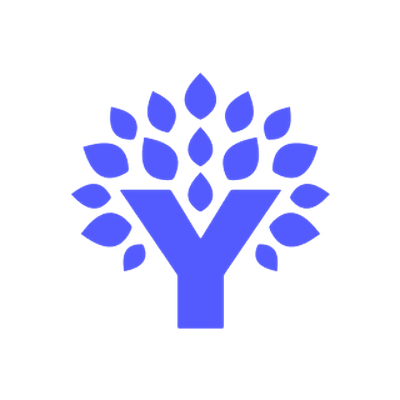
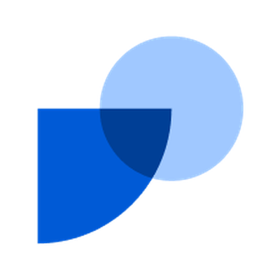
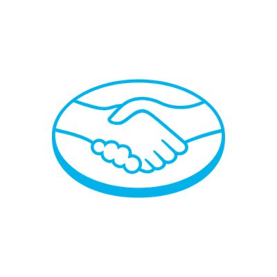
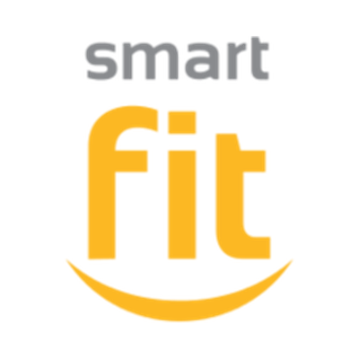
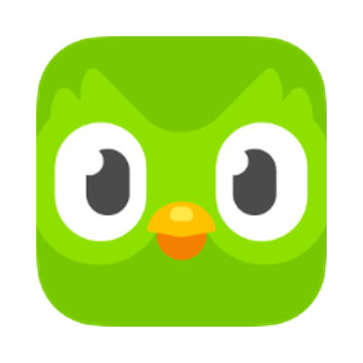
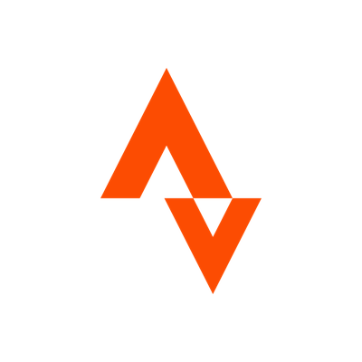
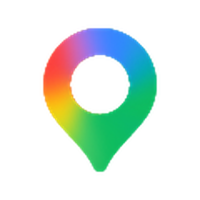
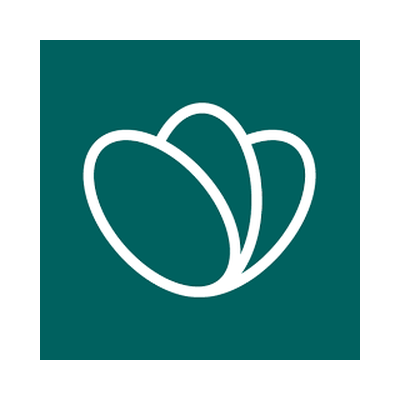
Lo que ningún caso resuelve solo
Los que capturan el dato (Uber, Mercado Pago, Strava) no lo proyectan, y los que proyectan (Fintual, YNAB) no lo capturan. La oportunidad está en integrar: captura automática + lectura simple + anticipación.
Conclusión para la ideación
La solución no debe pedirle a Joselyn "ordenar mejor su Excel": debe eliminar la digitación. T2 y T5 aportan la sostenibilidad: estabilidad económica y menos recursos por atención.
Contexto · Unidad 2 · Referentes06
Contexto · Unidad 2 — 2.1.3 Perfil de usuaria y requerimientos
13 requerimientos, 6 necesidades, una jerarquía
Cada insight de la UA1 se tradujo en lo que la solución debe cumplir, con su aporte sostenible: Ec económico · So social · Am ambiental.
1
C1 · Agenda conectada
R1 cada cita confirmada se vuelve ingreso proyectado · R2 integrarse con la agenda que ya usa (Google Calendar, Cal.com) · R3 separar clínica 70/30 y domicilio EcAm
1
C2 · Ganancia real visible
R4 ganancia neta por atención, semana y mes · R5 sin lenguaje contable, lectura de menos de 1 minuto en el celular EcSo
2
C3 · Tiempo y bienestar
R6 cerrar el día en menos de 30 min, con un toque por atención · R7 registrar en el momento, no de noche So
2
C4 · Costos y rutas del domicilio
R8 descontar traslado (km y combustible) y materiales · R9 sugerir agrupar domicilios por sector EcAm
3
C5 · Anticipación y estabilidad
R10 historial y proyección a 3–6 meses con estacionalidad · R11 alertar meses bajos y sugerir acciones EcSo
4
C6 · Cumplimiento y confianza
R12 provisionar la retención de la boleta y estimar la Operación Renta · R13 guardar solo datos financieros y de agenda, nunca la ficha clínica (Ley 21.719) EcSo
Mapa de empatía · lo que le duele
No saber cuánto gana, los meses bajos que llegan por sorpresa, el trabajo administrativo fuera de horario, los costos del domicilio que no ve y los impuestos anuales.
Jerarquía (impacto × frecuencia del dolor)
1 C1 · C2: el núcleo; sin agenda conectada no hay dato · 2 C3 · C4: victorias tempranas · 3 C5: necesita 2–3 meses de historial · 4 C6: alto impacto, pero el dolor es anual.
Contexto · Unidad 2 · Requerimientos07
Contexto · Unidad 2 — 2.1.4 Brainstorming, clasificación y metáfora
De 60 ideas a un concepto: Copiloto Kine
60
ideas en 8 categorías · 47 con aporte sostenible
13
en el foco: originalidad y factibilidad ≥ 4 de 5
1
concepto directriz: Copiloto Kine
17 ideas nacen de la voz de la usuaria o de los expertos.
Selección de la idea (máx. 30)
Camino
Total
A · Copiloto Kine
Se conecta a la agenda existente
27
B · Planilla inteligente
Barata, pero mantiene la digitación diaria
21
C · Agenda propia nueva
Compite con Cal.com y AgendaPro y obliga a cambiar de herramienta
15
Criterios: responde al desafío, recursos internos y externos, prototipable en la UA3, aporte sostenible y diferenciación.
Metáfora y atributos · 2.1.4.3
"Es como el tablero y el copiloto de un auto de rally."
Joselyn maneja. El tablero muestra la ganancia y el colchón; el copiloto le lee la ruta que viene: los meses bajos, la agenda del día y cuándo acelerar. Ella nunca suelta el volante.
AnticipadorEc avisa antes de la curva
AutomáticoSoEc la usuaria solo confirma
Legible de un vistazoSo semáforo, sin jerga
SostenibleEcSoAm rinde más con menos
Las 13 ideas del foco, en 4 categorías
Ganancia real por atención
10 ganancia neta al cerrar · 12 clínica vs. domicilio · 17 costo por km · 18 kit de materiales
Impuestos sin sorpresa
33 provisión de la retención · 34 termómetro de la Operación Renta
Anticipación y colchón
25 proyección 3–6 meses · 26 alerta de meses bajos · 29 colchón automático · 30 cupos de último minuto
Tiempo y rutas sostenibles
22 días por sector · 48 modo "no trabajo de noche" · 49 horas recuperadas
Contexto · Unidad 2 · Ideación08
Unidad 3 · Prototipado y testeo · Versión 1 — alcance mínimo
Nuestro prototipo · V1
Primera versión
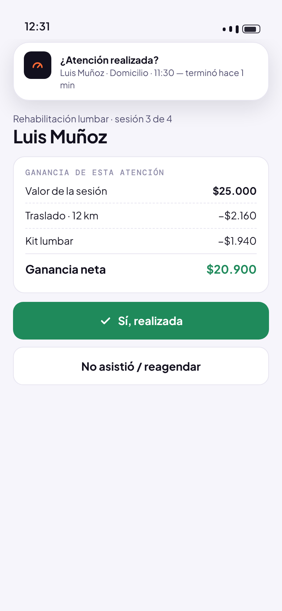
Atención realizada
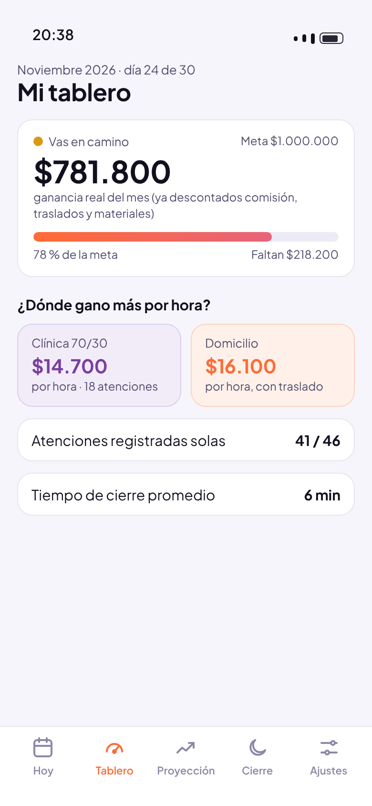
Tablero
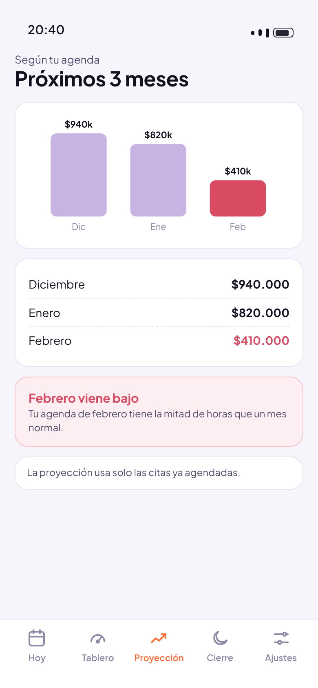
Proyección
1
BeneficiosCada cita de su agenda se vuelve ingreso. Al cerrar una atención ve su ganancia neta, con comisión, traslado y materiales descontados, y un tablero con semáforo.
2
Principales costosDiseño y desarrollo low-code del equipo, conexión con Google Calendar (API sin costo) y Google Sheets como base de datos del prototipo.
3
Hipótesis a testearCon el cierre de un toque, Joselyn baja su registro diario de ~60 a menos de 30 min y ≥ 80 % de sus atenciones se registran solas.
Prototipo V1 · capturas de unidad-2/app · datos ficticios de ejemplo09
Unidad 3 · Prototipado y testeo · Iteración
¿Qué cambia de V1 a V2 y por qué?
La V1 cubre el núcleo (prioridades 1 y 2). La V2 suma lo que la V1 deja abierto, a partir de los requerimientos y de la voz de las usuarias y los expertos.
Aspecto
Versión 1
Evidencia
Versión 2 (iterada)
Impuestos
No se consideran
Asesor financiero: la Operación Renta llega como sorpresa · I4 · R12
→ Retención apartada en cada cobro y termómetro de la Operación Renta en pesos (ideas 33 y 34) Ec
Meses bajos
Los muestra, pero no sugiere qué hacer
Asesor financiero: no hay colchón para los meses bajos · I6 · R11
→ Alerta temprana con acciones, colchón automático (un % de cada pago) y cupos de último minuto (ideas 26, 29 y 30) EcSo
Domicilios
Descuenta los km, pero no los reduce
I5 · R9 · el auto propio es parte central de sus costos
→ Días por sector ("martes = Machalí") y ruta del día agrupada (ideas 19 y 22) AmEc
Bienestar
Cierre rápido, pero a cualquier hora
Catalina: "me toma una hora actualmente diario" · R6 · R7
→ Modo "no trabajo de noche" (cierre antes de las 21 h) e indicador de horas recuperadas (ideas 48 y 49) So
Proyección
3 meses, solo con la agenda
R10 · se activa con 2–3 meses de historial
→ 3 a 6 meses con estacionalidad, escrita en palabras cotidianas (referente Fintual) Ec
Avisos
Una notificación por cada atención
Riesgo de sobrecarga identificado en el informe EV2
→ Resumen semanal por WhatsApp y un solo aviso diario configurable So
La V2 es el material que se llevará a la sesión de co-creación con Joselyn y Catalina (votación, metáfora y test de 5 segundos). Sus resultados se integrarán como siguiente ciclo.
Propuesta · Iteración10
Unidad 3 · Prototipado y testeo · Versión 2 — iterada
Nuestro prototipo · V2
Versión iterada
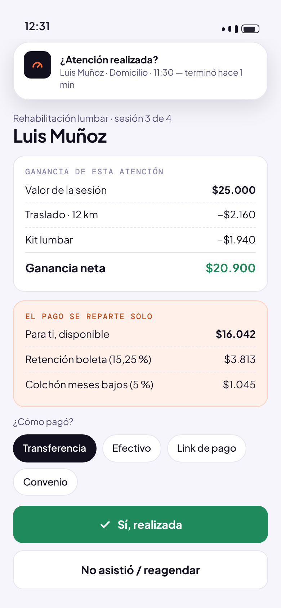
El pago se reparte solo
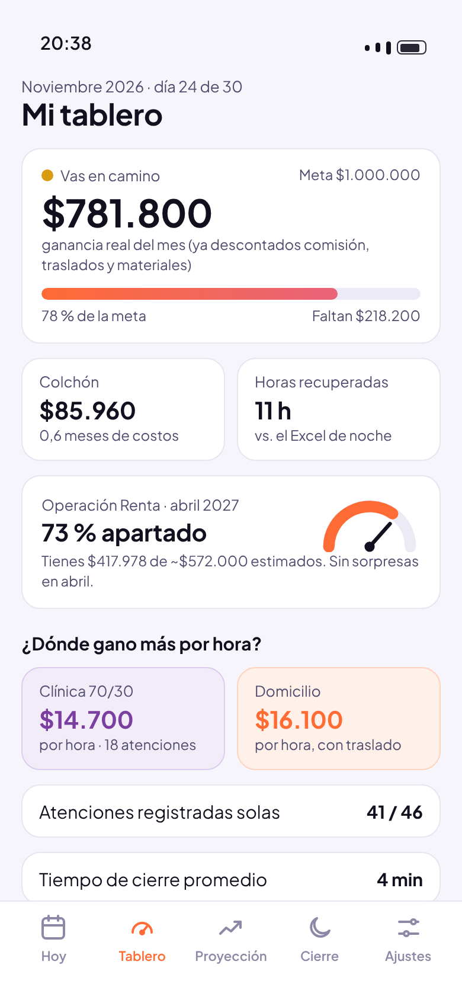
Tablero con impuestos
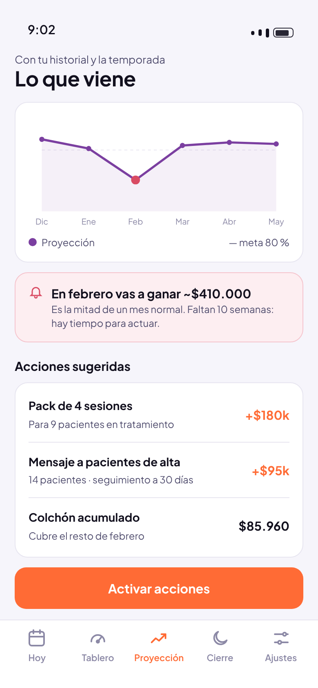
Alerta con acciones
1
BeneficiosAparta sola la retención y un colchón, agrupa domicilios por sector (−9 km al día), ofrece las horas libres y cierra el día antes de las 21 h.
2
Principales costosLo de la V1 más mapas, un medio de pago con link (comisión por cobro) y soporte. Para Joselyn: $20.000–25.000 al mes de referencia.
3
Hipótesis a testearSi el copiloto avisa un mes bajo con una acción concreta, Joselyn la activa, y la proyección se equivoca en ≤ 10 % frente a lo real.
Prototipo V2 · capturas de unidad-2/app · datos ficticios de ejemplo11
Unidad 3 · Prototipado y testeo · Versión 2 — Joselyn, su día
Pantallas V2 · El día con el copiloto
Versión iterada
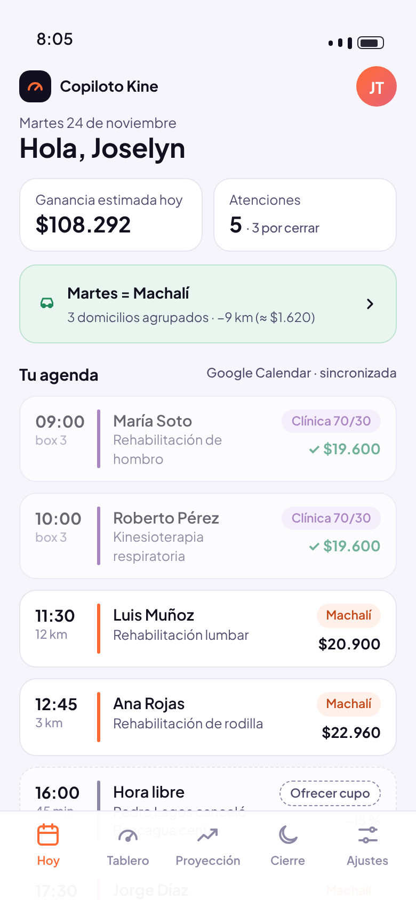
HoyMartes = Machalí
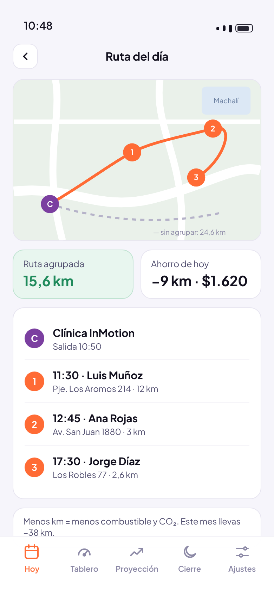
Ruta por sector−9 km en el día
Atención realizadaEl pago se reparte solo
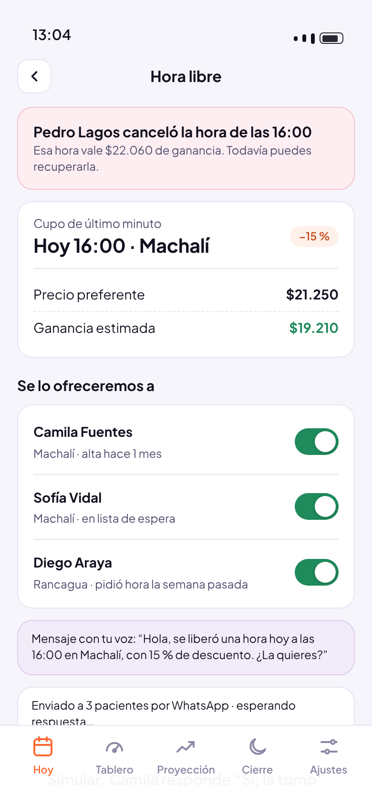
Cupo de último minutoLa hora vacía se ofrece
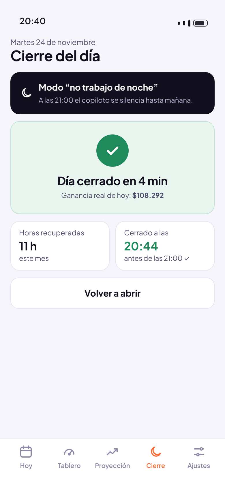
Cierre del díaAntes de las 21:00
Propuesta · Mockups V2 · capturas de unidad-2/app · datos ficticios de ejemplo12
Unidad 3 · Prototipado y testeo · Versión 2 — Joselyn, sus números
Pantallas V2 · Ganancia, impuestos y lo que viene
Versión iterada
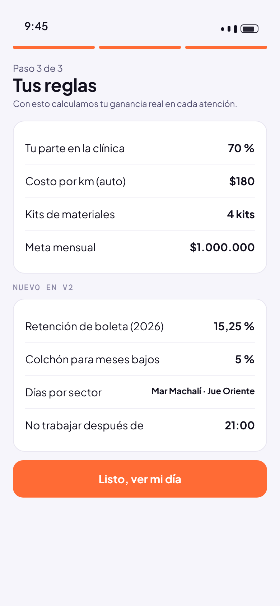
Tus reglasRetención, colchón y sectores
TableroColchón y Operación Renta
Proyección6 meses con acciones
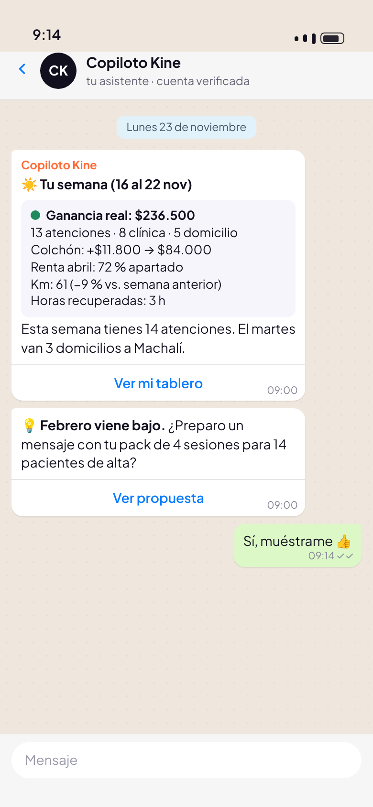
Resumen semanalLlega solo por WhatsApp
Propuesta · Mockups V2 · capturas de unidad-2/app · datos ficticios de ejemplo13
Unidad 3 · Prototipado y testeo · Versión 2 — el paciente
Nuestro prototipo · el paciente
Versión iterada
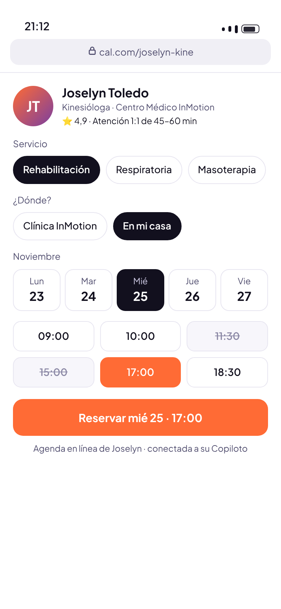
Reserva en línea
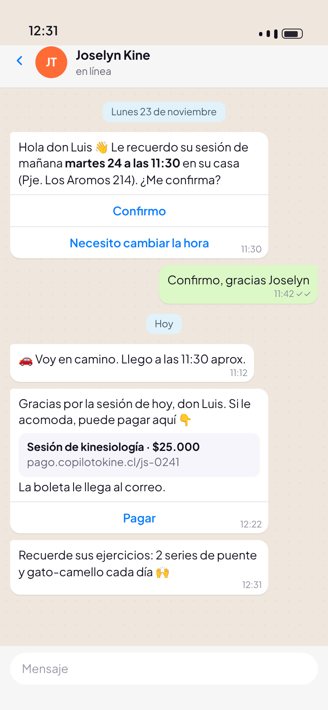
Recordatorio y aviso
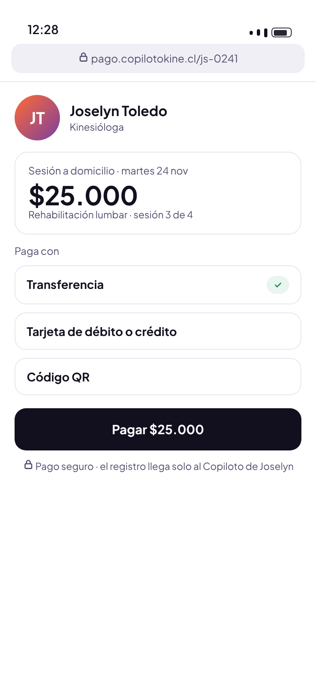
Pago con link
1
BeneficiosReserva en un minuto en la agenda de siempre, recibe recordatorio y aviso de llegada por WhatsApp y paga sin efectivo; la boleta le llega al correo.
2
Principales costosMensajes con plantillas en la voz de Joselyn y la comisión del medio de pago en cada cobro.
3
Hipótesis a testearLos pacientes, incluidos adultos mayores, confirman y pagan con link sin ayuda: meta a validar ≥ 70 % de los domicilios.
Prototipo V2 · paciente · capturas de unidad-2/app · datos ficticios de ejemplo14
Unidad 3 · Prototipado y testeo · La app
Copiloto Kine: el prototipo y sus 17 pantallas
Prototipo funcional
App web móvil navegable (unidad-2/app), con datos de ejemplo y dos versiones: V1 (alcance mínimo) y V2 (iterada). Cada acción cambia los números: confirmar una atención suma al tablero, tomar un cupo llena la agenda y activar acciones sube la proyección.
Joselyn · configurar
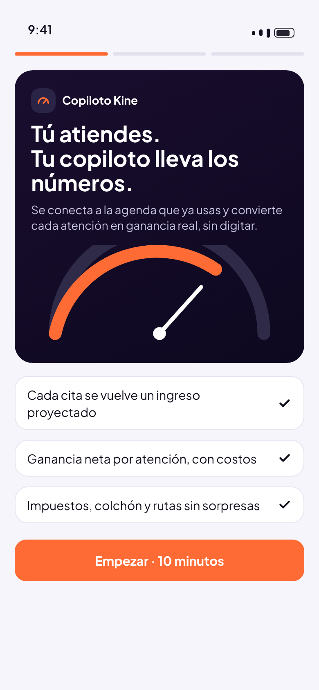
Bienvenida
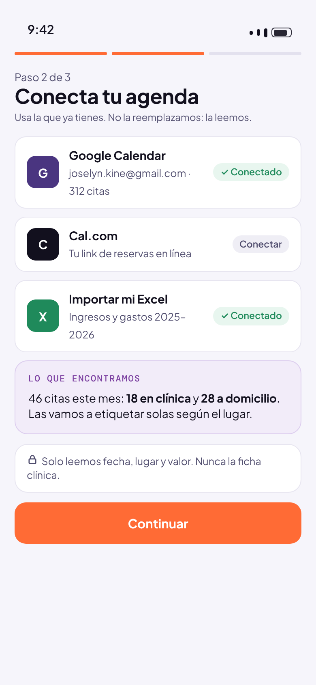
Conectar agendaTus reglas
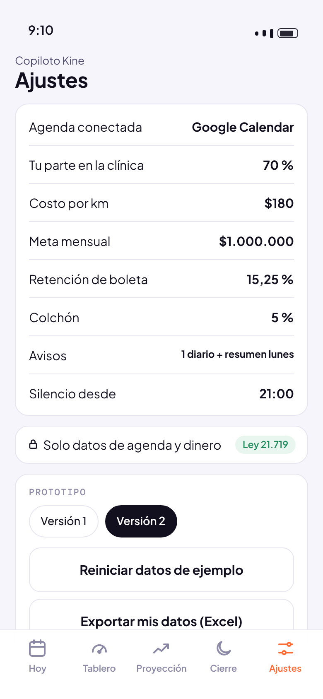
Ajustes
Joselyn · su día
HoyRuta por sectorAtención realizadaCupo último minuto
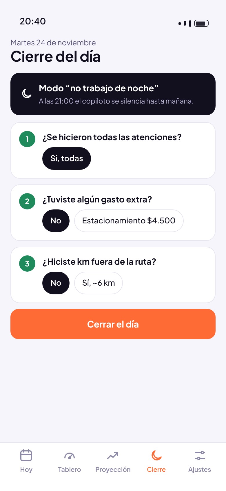
Cierre del día
Joselyn · sus números
TableroProyecciónResumen semanal
Paciente
Reserva en líneaRecordatorio y avisoPago con link
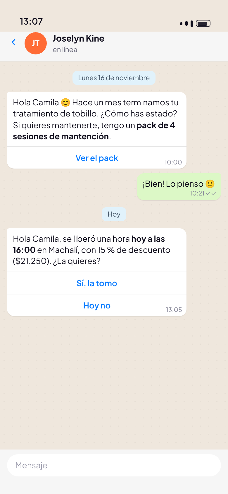
Cupo y seguimiento
Cómo se usa
Abrir unidad-2/app/index.html en el navegador. En el computador se ve el teléfono junto a la lista de pantallas; en el celular, la app a pantalla completa.
Qué lee y qué no
Solo la fecha, el lugar y el valor de cada cita, más los cobros. Nunca la ficha clínica (R13 · Ley 21.719).
Listo para la UA3
Sirve para la sesión de co-creación y para los dos ciclos de testeo, midiendo minutos de registro y atenciones registradas solas.
Propuesta · Mapa de pantallas15
Unidad 3 · Prototipado y testeo
Próximos pasos
01
Sesión de co-creación (45 min)
Con Joselyn (presencial) y Catalina (remota): votación de ideas, validación de la metáfora, test de 5 segundos de la propuesta de valor y elección de la métrica.
02
Testeo del prototipo · UA3
El prototipo funcional ya existe (unidad-2/app). Se llevará a dos ciclos de testeo midiendo las métricas claves (rúbrica ES03).
03
Validación tributaria
Revisar con el asesor financiero las reglas de retención y la estimación de la Operación Renta antes de prototiparlas.
Ella maneja. La herramienta es el copiloto: le devuelve el tiempo y la claridad para sostener el trato 1:1 que la hace única.
Innovación y Emprendimiento III · INACAP Rancagua · 202616